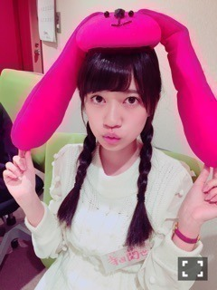

| 2015/10 06 Tue | ひめたん-0o0-その578 |
お知らせがたくさん。どうしましょう。
まずは、
先程番組で発表になりました
ソニレコ！暇つぶしTVの2代目MCに
能條愛未と私の2人が就任しました。
サプライズだったので
みなさんもびっくりしたと思いますし
私たちもびっくりしました！
まい様とkaz、2年間
本当にお疲れ様でした( ˇωˇ )
たくさんのメッセージ来てて
ソニレコファミリーの皆さんから
愛されているなあとしみじみ感じました
ふたりがいてのソニレコだったんですね。
惜しむ声が多いとは思いますが
新生ソニレコも是非
好きになってもらえたら嬉しいです( ˇωˇ )
Kちゃんとじょーんとおひめちゃん
3人でこれから頑張ります
よろしくお願いします！

新ユニットの名前が決まりました！
「サンクエトワール」
サンエトちゃんかな(´,,•ω•,,｀)
可愛がってあげてください
よろしくお願いします♡
最近この5人で
いろんな撮影をしてきたので
早く見てもらいたいなぁ。
新曲「大人への近道」も解禁になりました！
全部はお届け出来なかったので
次の乃木坂回でしっかり流す予定ですが、
あんな感じの爽やかな曲です～＊
役回りも見えてきたし
改めて結束力が強くなった放送でした！
みんな平和主義者なので
のほほんとしてて居心地が良いのです
でも実は熱い人間の集まりだなあと。
この活動がはじまって
ひとりひとりとも仲良くなった気がするし
まだみんなのこと知りたいなと思ってます♡
未央ちゃんと蘭世は22時以降は
ラジオに出られないということで
二人推しの方には物足りなかったかな？
ユニットとしてもだけれど
ひとりひとりの面白さが
伝わってるといいなあ～
らじるちゃんと蘭世。かわいい。
膨大なおたよりの数いただきました
本当にありがとうございました！
4人ともまた来てね♡
オリラジさんのライブの感想
伝えられたのもよかったです(´｡•ω•｡`)
次回は私のパーソナルなクイズを
リスナー参加型な感じで行いますよ
スタジオと電話繋いじゃうよ～！
詳しくはこちら。
ジャケ写公開になりました！
ここさけの舞台
秩父で撮りました！
私たちアンダーメンバーはきっと
中や裏にいるんじゃないかなと
思っております～＊

田んぼマジック。
(＊´・ω・＊)
コメント(631)
2015/10/06 00:06